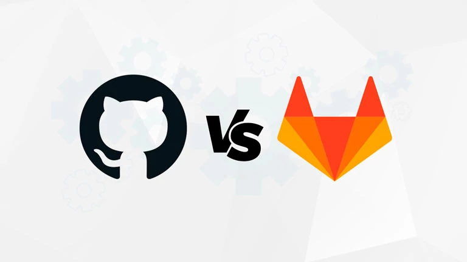
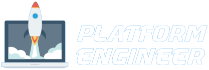
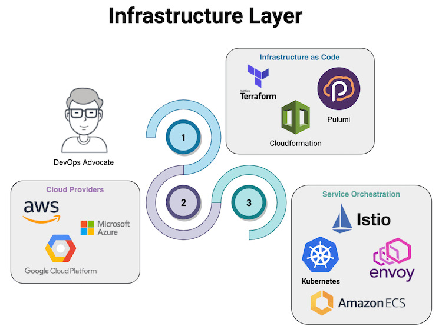
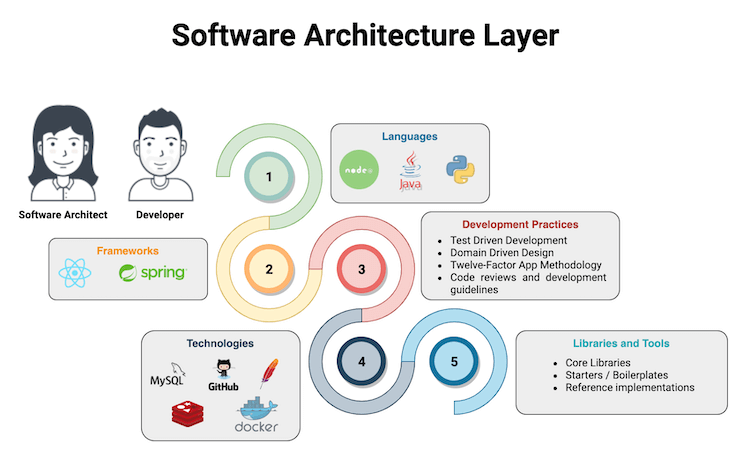
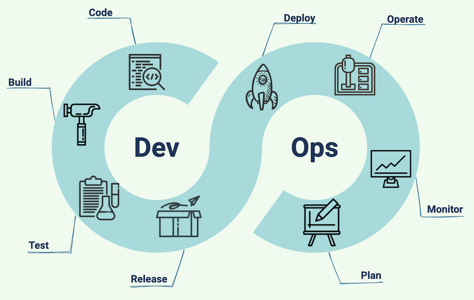
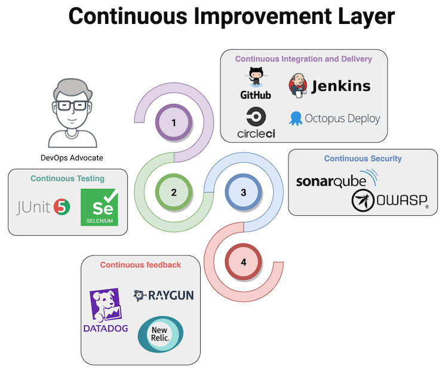

O que é Cultura DevOps ?
A Origem DevOps

The GodFather
Patrick Debois


... Uau um processo !!!!
Rotina DevOps

Etapas ou Ciclo de Vida

Integração Contínua

Git
Integração Continua e Deploy continuo

Iniciando os Testes
Inspeção contínua e qualidade do código


Executando testes
Ferramentas DevOps
Filosofia
DevOps é a maneira em que uma organização de tecnologia se incorpora em um negócio para o benefício desse negócio.


Plataform Engineering
Mas o que é A Plataforma?
A Plataforma é esta camada de abstracção que esconde a complexidade subjacente ao funcionamento das camadas de software e infra-estrutura, trata de todos os detalhes do tratamento das operações de infra-estrutura, orquestração de serviços, CI/CD, e monitorização de todos estes componentes.
Plataforma é um produto
Assim, a Plataforma pode ser vista como um produto interno cujos interessados(stakeholders) são as equipes tecnológicas que constroem em cima dela o software e as aplicações que alimentam o negócio e o ajudam a prosperar neste panorama tecnológico em constante mudança.
Platform Components
A Plataforma pode ser uma entidade multicamadas onde cada camada tem as suas responsabilidades e limites claramente definidos, e poderia ir da seguinte forma
Platform Components
- The Infrastructure layer
- The Software Architecture layer
- The Continuous Improvement layer (DevOps)
- Continuous Integration and Delivery (or Deployment)
- Continuous Testing
- Continuous Security
- Continuous Feedback (Monitoring)
- Knowledge Transfer and Documentation Layer
A camada de Infraestrutura
A infra-estrutura é a camada mais profunda da Plataforma, e uma das mais importantes. A infra-estrutura deve ser fácil de reproduzir e auditável, utilizando o IaC (Infrastructure as Code) para simplificar a gestão de recursos e apoiar os requisitos de Segurança e Conformidade (BCP/DRP, Business Continuity, e Disaster Recovery Plans).
Camada de Infraestrutura
A camada de Arquitetura de Software
A nuvem e tecnologias como a conteinerização e orquestração de serviços introduzem novos paradigmas, exigindo que as empresas repensem os seus Ciclos de Vida de Desenvolvimento de Software (SDLC). Tem havido alguns esforços como a metodologia da aplicação dos Doze Factores para enfrentar estes desafios e ajudar os programadores e arquitectos de software a conceber software adequado a este novo cenário.
A camada de Arquitetura de Software
SDLC
DevOPS
DevOps é uma cultura, e a equipa da Plataforma deve transmiti-la às equipas tecnológicas, com o objectivo de alcançar eficiência operacional em todo o Ciclo de Vida do Desenvolvimento de Software e reduzir o tempo de colocação no mercado.
devOPS
A equipe da Plataforma precisa de se preocupar com a forma como o código é escrito, como é implantado, e o feedback imediato que os programadores podem ter sobre a forma como as suas aplicações funcionam em ambientes de produção.
A camada de melhoria continua
A camada de melhoria continua
A equipe da Plataforma será responsável pela manutenção da camada de Melhoria Contínua que fornecerá às equipes de Tecnologia as ferramentas necessárias para implementar cada passo de um SDLC maduro, abstraindo a complexidade de interagir com esta camada através da utilização de APIs, robots ChatOps ou outros meios.
Continuous Integration and Delivery
A Integração e Entrega Continua é um dos pilares da cultura DevOps, simplificando o lançamento de novos produtos e características, reduzindo o tempo de colocação no mercado e permitindo que uma empresa seja competitiva.
Continuous Testing
A equipe da Plataforma deve ser capaz de fornecer os mecanismos para testar o software que as equipes de tecnologia estão a desenvolver durante todo o SDLC.
Continuous Testing
Por exemplo, testes de Unidade e Integração durante a etapa de Integração Contínua, testes de Fumaça e Regressão durante a etapa de Entrega Contínua, e testes periódicos que as equipas AQA (Automated Quality Assurance) criam para testar que as aplicações estão a comportar-se como esperado em ambientes de produção.
Continuous Security
O ritmo incrível dos avanços da tecnologia nestes dias chegou também com os desafios de como assegurar e proteger os nossos sistemas críticos. O termo DevSecOps tornou-se popular e centra-se em trazer a cultura DevOps ao panorama da segurança, para implementar eficazmente as melhores práticas de segurança no SDLC.
Continuous Security
a integração de coisas como a análise de código estático, o scanning de vulnerabilidade, e os testes de penetração nas condutas CI/CD tornou-se necessária para proteger os nossos bens mais valiosos.
Continuous Feedback
A capacidade de obtenção de informação em cada camada da Plataforma é vital para compreender o seu desempenho, a equipe da Plataforma deve implementar os mecanismos para fornecer feedback às equipes de tecnologia sobre como as suas aplicações e sistemas se estão a comportar na Produção.
Continuous Feedback
A equipe da plataforma escolherá as ferramentas certas para monitorizar a infra-estrutura, gerir os registos, monitorizar a métrica de desempenho das aplicações (APM), e a monitorização do tempo de funcionamento.
Rousseau L. Braga
Analista de Sistemas TJRO DevOps Practitioner github